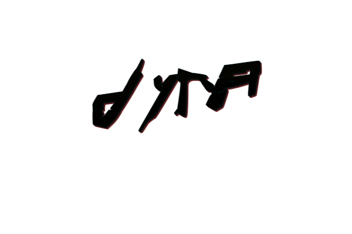

fortnoxpockets
MNOGOZNAAL
Загадочный это то слово, которым стало модно нарекать различных хип-хоп исполнителей, что появились после так называемого “переворота игры”. Но Максим Mnogoznaal его самое настоящие воплащение, ведь в его песнях (а их сложно назвать треками) твориться что-то невообразимое. Угнетающая атмосфера периферии, мистические и художественные тексты со своей вселенной и героями, глубокие музыкальные мотивы, так и прорывающиеся в самые недра души.


Без обид (2021 г.)

Круг Ветров (2020 г.)

Антигерой (2019 г.)

DOF (2019 г.)

Гостиница Космос (2018 г.)

Z-PAM (2017 г.)

Muna (2017 г.)

Ночной ловец Солнца (2016 г.)

AMMO (2016 г.)

Иферус: Белые долины (2015 г.)

Марш слонов (2014 г.)
@By Dima